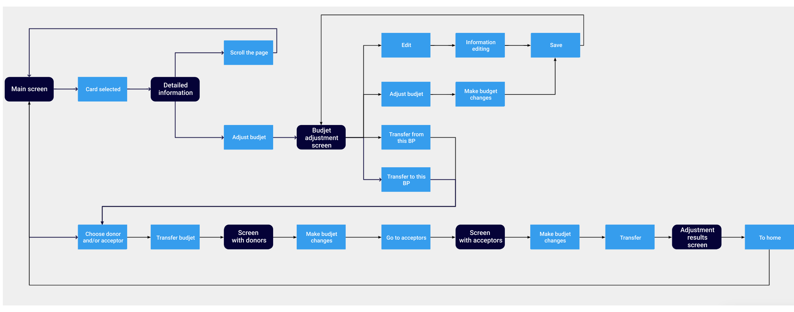

The task was to design and develop a design for the hr personal account. It consists of three separate parts: seating arrangements, support for organizational changes and budget adjustment
Reception, dismissal and transfer of an employee to another position are carried out in this section. Each employee has his own budget position (hereinafter BP) - this is the slot in the budget of the company that he occupies
The functionality should allow you to attach a new employee to a budget position, release it from a laid-off employee, or move an employee from one budget position to another, with the necessary parameters changed. We tested two options for displaying budget positions:
1. In the form of tables familiar to the user, where detailed information opens on a new page:
2. And in the form of cards, with detailed information on the right
Users chose the second option according to the test results. It turned out to be more convenient for quick search and viewing of employees, since all work is carried out on one screen. Schemes were developed for two scenarios:
1. A scenario with a change in the existing budget position (for example, the transfer of an employee on maternity leave, dismissal or transfer to another position)
2. The scenario with the search or creation of a new budget position (for example, when hiring a new employee)
The design has been redone. The user can quickly find the employee’s card on the main page and see detailed information on it: the employee is attached to which budget position, his personal data, information about the employee on the company's internal portal, etc.
All detailed information is divided into semantic blocks, which, if desired, can be collapsed
If HR needs to transfer the employee on maternity leave, dismiss or transfer to a new position, he goes to the processing screen and makes the necessary changes
Detailed information from the main screen is displayed at this stage, so that users can access
If HR needs to attach an employee to a budget position (for example, when applying for a job), he gets to the screen where he can create a new budget position or find an existing empty position
The card has the ability to immediately attach an employee, go to editing, and also see the main information on the budget position
The reporting year is for each budget position. These are the parameters of premium, salary, reserve, etc., for months. Functionality was developed to change these parameters
General mechanics and common components are present in all sections of the HR cabinet. We can immediately go on the first screen according to one of two scenarios: transfer within one budget position or multiple transfer
The first scenario is a budget transfer within one budget position. Getting started is the same as in the seating arrangements cabinet. The user gets from the detailed information card to the budget allocation screen, in which we can: edit the attributes of the budget item, start adjusting the budget or select this budget position as a participant in multiple transfers
We can transfer budget between premium, salary and reserve or add new types of premium. After user testing we add all expenditures to the right side for calculations convenience
We can choose donors in multiple transfers (budget positions from which we will transfer money) and acceptors (budget positions, and to which we will transfer money). There may be several donors and several acceptors
The user collects the necessary cards for transfer, as in the basket of the online store, and they are displayed at the top, and if desired, they can be easily removed
All donors are presented on the transfer screen as two-part cards: information on the budget position that HR needs to transfer and an adjustment block. The user can make changes for each donor, and at the bottom there is a panel with the results and the total transfer amount
Next, the user transfers all the money from the previous stage to acceptors. The result of the transfer must be zero